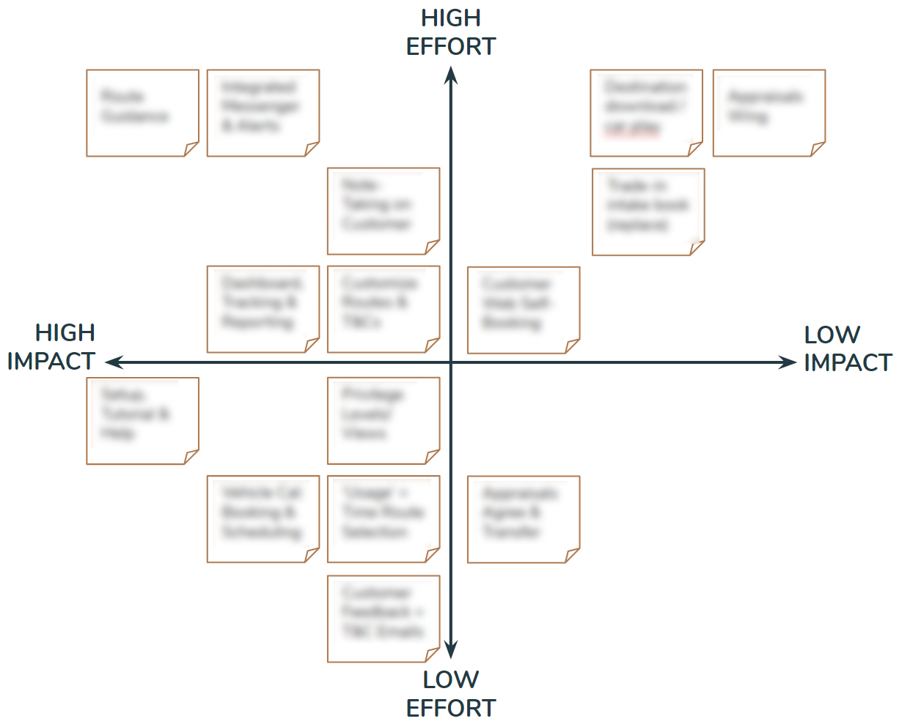

ProAuto Group
Company
ProAuto
Duration
Casual engagement over 5 months
Team
Myself
The Challenge
Many motor dealerships are bogged down by processes that have not innovated over time, in many cases they are mandated by their distributors into using systems that were built in the 90s and are structurally unable to adapt quickly enough to meet their needs. I was asked to look at one subsection of these processes for a group of automotive dealers, who are looking to utilise digital products to enhance their workflows and make more money. The particular processes they needed help with were leading to customers walking off the lot, rapport breaks between salespeople and customers, money wasted on paper and ink, inaccurate or misplaced data and wasted administrative time. For the duration of this case study, I will call this process: ‘Task X’
The plan
I held 3 separate kickoff interviews with stakeholders to gain an understanding of the project, their goals, key affected parties, the existing processes and to get ahold of reference material. I then drafted a roadmap forward, starting with user interviews & contextual enquiries. As this was a new product, I used the double-diamond to explain the UX process at a high-level as well as some of the methodolgies I might utilise to get to an end result. Primarily, I wanted the stakeholders to understand that insights from discovery could lead the solution in unanticipated directions. They were incredibly open and encouraging of this.
User Interviews
I conducted user interviews and observational research with four salespeople - preparing for the interviews by drafting questions and assumptions. I learned about the context of ‘Task X’, as well as some deep and enlightening insights into the goals and frustrations of sales staff, as well as the needs of the customers that are in the showroom, shopping for their next vehicle. For example, I learned that “90% of people buy for the emotional reason” and that salespeople often intentionally go off ‘Task X’ because it gives them a greater chance of making a sale. These insights, among others, drove major feature alterations on the final design.
Contextual Enquiry
I followed up each interview by asking the participant to carry out ‘Task X’ as they would normally do, while narrating their thoughts and actions out loud. I just watched and listened. In a notebook, I was attempting to piece together the actions required to successfully complete the process and notice any points that contained friction. After observation I got the first two participants to walk me through the process again, and I probed into their motivations and received copies of all required documentation so I could re-create the process in a flowchart.
(If I had the chance to do this project again, I would have first hosted a journey mapping workshop with all of the salespeople, to get an overview of: the actions required, the pains, the goals and their ideas for solving any problems that came up. This would have been more efficient.)
The outcome was 3 flowcharts for what turned out to be an intertwined set of workflows:
Competitive Analysis
There are an array of products on the market that partially solve ‘Task X,’ but that are incomplete from the point-of-view of ProAuto. I looked at three comparative solutions and logged their base market, key functionality, integration with dealer systems, what platforms they exist on, their payment structure and a key highlight from a UX point-of-view.
Business Model Canvas session (the turn)
During the discussion on the competitive analysis findings with one of the stakeholders, we had an epiphany that would elevate the solution’s commercial value well beyond ‘Task X.’ I followed this revelation up with a business model canvas brainstorming session, where we fleshed out the business solution as it began to transform to get clarity and ensure it was feasible.
"(Salespeople) may even steer people away from [additional product] because they are tedious, and take up time that could be more wisely spent on a new sale and commission" - Salesperson
Early wireframes & usability testing
Earlier, after mapping the process flowcharts, I created iPad-sized wireframes of the core process and video recorded usability walkthroughs with salespeople on a Macbook. I asked the users to undertake ‘Task X’ digitally without any prior introduction to the interface. I began with many of the expected testing pleasantries: asking them to think out loud, assuring them that I was testing the design and not them, and letting them know that there are no wrong answers. The prototype was not hot-spotted, so when the users interacted with the screens I would manually move them forward. I gained an array of insights which I turned into implications and then iterations on the prototype. These changes ranged from moving less utilized features from the main user-flow, to adding customization at the user-level, to changing back-end processes.
Feature prioritization
A vision to MVP
With the epiphany that came when we workshopped the business model canvas, and the insights from user research, the project had begun to expand in scope. Due to the increasing scope, we decided it made more sense for the solution to exist on mobile so it could be utilised by non-salespeople who were increasingly gaining a role.
Following ideation, I mapped features on an impact-effort matrix to help determine what would be included in the minimum viable product. This was run by stakeholders to get agreement, and lead to the high-impact-low-effort features (and some of the high-impact-high-effort features) being included as must-haves in our MoSCoW listing.

Co-design sketching session
Taking these features, I held a co-design session with the key stakeholder. We folded up two a4 pages into 8 sections and then spent 15 minutes drawing up interface ideas for any part of the app we wanted. We then shared these with each other and discussed why we had made design choices.
Medium-fidelity prototype
At this point I had already designed and iterated an iPad wire-flow, tested it and created sketches for the mobile version, so I dove right into a medium fidelity prototype in sketch. I determined the information architecture, including where each feature would sit and how users could navigate between them - this helped me design the navbar. Then I used a mix of known and researched mobile patterns to guide my design of the core processes, looking at comparative and popular apps for inspiration. This prototype formed the basis for many discussions and went through some minor iterations before being presented to stakeholders.
Service Blueprint
To translate the experience into an entire journey which encapsulated the guest experience, dealer actions, frontstage, backstage and support processes, I generated a service blueprint. This document achieved massive alignment and understanding when it was walked through in a presentation with stakeholders, business partners and engineering.
Visual Design survey
As my wireframes were only medium fidelity, I made a survey to capture the intended visual look and feel for the next iteration. This was filled out by sales staff, support staff and stakeholders.
The outcome
Although the actual internal UX project was very successful in terms of meeting the goals of ProAuto group, difficulties relating to integration with dealer systems have delayed the project from getting off the ground. The group has a commercially valuable product proposal, but are still waiting on partnerships between the distributors and technical systems to be consolidated before there is capacity to build the API’s that would see the product succeed.
Working on this mobile application was an immensely rewarding experience as I owned the entire process from planning to discovery to design to delivery. It was an opportunity to stretch my strategic thinking by continually adapting to new information, or the lack-thereof. I decided what methodologies would get me closer to a useful & usable product, and then implemented them until I was confident I was solving real problems.
If I had the opportunity to start this project again, I would begin the user interaction phase with user journey mapping workshops, and persona workshops, rather than jumping straight into interviews. It would have been an opportunity to gain a broader context, so I could focus more on motivations and frustrations in interviews. Among other things, I would have also liked to have talked to customers on the showroom, though this wasn’t approved by stakeholders.